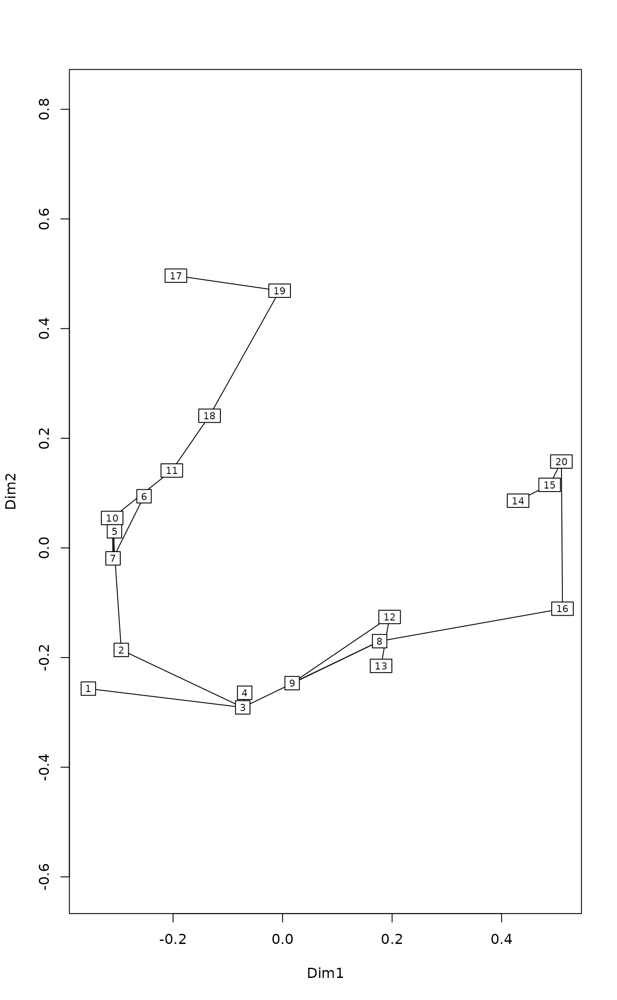
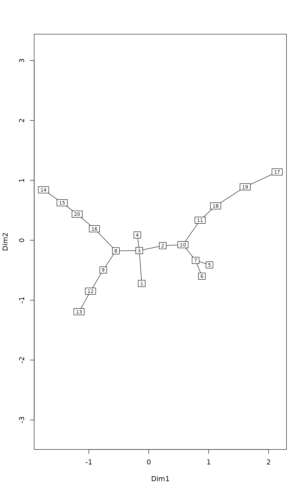
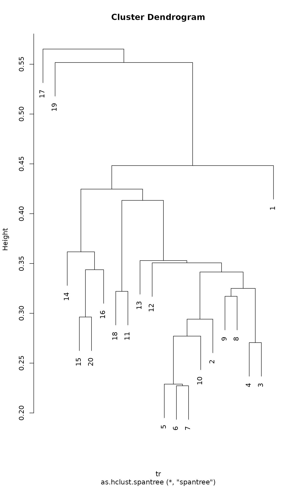
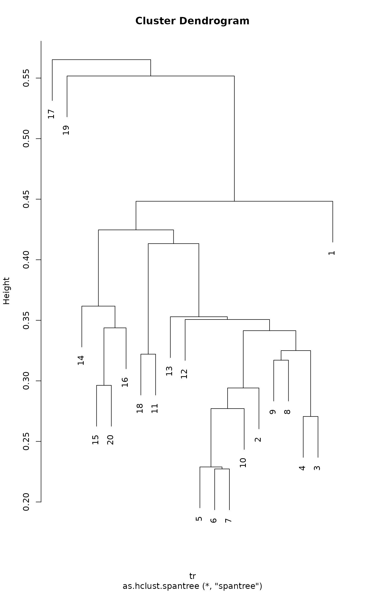

Minimum Spanning Tree
spantree.RdFunction spantree finds a minimum spanning tree
connecting all points, but disregarding dissimilarities that are at or
above the threshold or NA.
Usage
spantree(d, toolong = 0)
# S3 method for class 'spantree'
as.hclust(x, ...)
# S3 method for class 'spantree'
cophenetic(x)
spandepth(x)
# S3 method for class 'spantree'
plot(x, ord, cex = 0.7, type = "p", labels, dlim,
FUN = sammon, ...)
# S3 method for class 'spantree'
lines(x, ord, display="sites", col = 1, ...)Arguments
- d
Dissimilarity data inheriting from class
distor a an object, such as a matrix, that can be converted to a dissimilarity matrix. Functionsvegdistanddistare some functions producing suitable dissimilarity data.- toolong
Shortest dissimilarity regarded as
NA. The function uses a fuzz factor, so that dissimilarities close to the limit will be madeNA, too. Iftoolong = 0(or negative), no dissimilarity is regarded as too long.- x
A
spantreeresult object.- ord
An ordination configuration, or an ordination result known by
scores.- cex
Character expansion factor.
- type
Observations are plotted as points with
type="p"ortype="b", or as text label withtype="t". The tree (lines) will always be plotted.- labels
Text used with
type="t"or node names if this is missing.- dlim
A ceiling value used to highest
copheneticdissimilarity.- FUN
Ordination function to find the configuration from cophenetic dissimilarities. If the supplied
FUNdoes not work, supply ordination result as argumentord.- display
Type of
scoresused forord.- col
Colour of line segments. This can be a vector which is recycled for points, and the line colour will be a mixture of two joined points.
- ...
Other parameters passed to functions.
Details
Function spantree finds a minimum spanning tree for
dissimilarities (there may be several minimum spanning trees, but the
function finds only one). Dissimilarities at or above the threshold
toolong and NAs are disregarded, and the spanning tree
is found through other dissimilarities. If the data are disconnected,
the function will return a disconnected tree (or a forest), and the
corresponding link is NA. Connected subtrees can be identified
using distconnected.
Minimum spanning tree is closely related to single linkage
clustering, a.k.a. nearest neighbour clustering, and in genetics as
neighbour joining tree available in hclust and
agnes functions. The most important practical
difference is that minimum spanning tree has no concept of cluster
membership, but always joins individual points to each other. Function
as.hclust can change the spantree result into a
corresponding hclust object.
Function cophenetic finds distances between all points along
the tree segments. Function spandepth returns the depth of
each node. The nodes of a tree are either leaves (with one link) or
internal nodes (more than one link). The leaves are recursively
removed from the tree, and the depth is the layer at with the leaf
was removed. In disconnected spantree object (in a forest)
each tree is analysed separately and disconnected nodes not in any
tree have depth zero.
Function plot displays the tree over a
supplied ordination configuration, and lines adds a spanning
tree to an ordination graph. If configuration is not supplied for plot,
the function ordinates the cophenetic dissimilarities of the
spanning tree and overlays the tree on this result. The default
ordination function is sammon (package MASS),
because Sammon scaling emphasizes structure in the neighbourhood of
nodes and may be able to beautifully represent the tree (you may need
to set dlim, and sometimes the results will remain
twisted). These ordination methods do not work with disconnected
trees, but you must supply the ordination configuration. Function
lines will overlay the tree in an existing plot.
Function spantree uses Prim's method
implemented as priority-first search for dense graphs (Sedgewick
1990). Function cophenetic uses function
stepacross with option path = "extended". The
spantree is very fast, but cophenetic is slow in very
large data sets.
Value
Function spantree
returns an object of class spantree which is a
list with two vectors, each of length \(n-1\). The
number of links in a tree is one less the number of observations, and
the first item is omitted. The items are
- kid
The child node of the parent, starting from parent number two. If there is no link from the parent, value will be
NAand tree is disconnected at the node.- dist
Corresponding distance. If
kid = NA, thendist = 0.- labels
Names of nodes as found from the input dissimilarities.
- call
The function call.
Note
In principle, minimum spanning tree is equivalent to single linkage
clustering that can be performed using hclust or
agnes. However, these functions combine
clusters to each other and the information of the actually connected points
(the “single link”) cannot be recovered from the result. The
graphical output of a single linkage clustering plotted with
ordicluster will look very different from an equivalent
spanning tree plotted with lines.spantree.
Examples
data(dune)
dis <- vegdist(dune)
tr <- spantree(dis)
## Add tree to a metric scaling
plot(tr, cmdscale(dis), type = "t")

## Find a configuration to display the tree neatly
plot(tr, type = "t")
#> Initial stress : 0.03111
#> stress after 10 iters: 0.01302, magic = 0.500
#> stress after 20 iters: 0.01139, magic = 0.500
#> stress after 30 iters: 0.01118, magic = 0.500
#> stress after 40 iters: 0.01114, magic = 0.500

## Depths of nodes
depths <- spandepth(tr)
plot(tr, type = "t", label = depths)
#> Initial stress : 0.03111
#> stress after 10 iters: 0.01302, magic = 0.500
#> stress after 20 iters: 0.01139, magic = 0.500
#> stress after 30 iters: 0.01118, magic = 0.500
#> stress after 40 iters: 0.01114, magic = 0.500
 ## Plot as a dendrogram
cl <- as.hclust(tr)
plot(cl)

## cut hclust tree to classes and show in colours in spantree
plot(tr, col = cutree(cl, 5), pch=16)
#> Initial stress : 0.03111
#> stress after 10 iters: 0.01302, magic = 0.500
#> stress after 20 iters: 0.01139, magic = 0.500
#> stress after 30 iters: 0.01118, magic = 0.500
#> stress after 40 iters: 0.01114, magic = 0.500
## Plot as a dendrogram
cl <- as.hclust(tr)
plot(cl)

## cut hclust tree to classes and show in colours in spantree
plot(tr, col = cutree(cl, 5), pch=16)
#> Initial stress : 0.03111
#> stress after 10 iters: 0.01302, magic = 0.500
#> stress after 20 iters: 0.01139, magic = 0.500
#> stress after 30 iters: 0.01118, magic = 0.500
#> stress after 40 iters: 0.01114, magic = 0.500